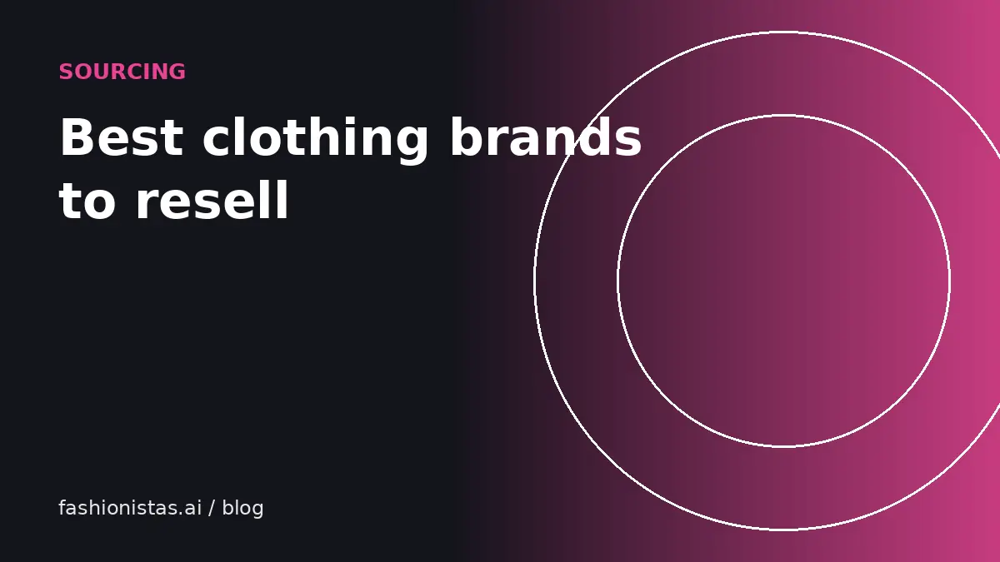

The best clothing brands to resell, and how to check any brand yourself

Some brands sell in a day; others sit for months at any price. Lists of 'top brands' go stale fast, so this guide does two things: it names the categories of brands that have consistently held resale value, and it shows you how to test any brand's demand yourself in five minutes before you spend a dollar sourcing it.
Why some brands hold their value
Resale demand comes down to a handful of things. Brands that resell well usually have at least two of these:
- Quality that survives wear. Good denim, leather, wool and well-made outerwear still look good used.
- Recognition. Buyers search for the brand by name, which means your listing gets found.
- Limited supply. Items made in small runs, discontinued lines, and collaborations are scarcer used than they were new.
- Price gap. If new is expensive and used is half price, used is attractive.
- Fandom or subculture. Streetwear, outdoor gear, Y2K and workwear all have communities that hunt for specific pieces.
Brands that rarely resell well tend to be the opposite: fast fashion that pills after a few washes, generic store brands no one searches for, and items so cheap new that used barely saves money.
Categories that consistently resell
Rather than a ranked list that will be out of date next season, here are the groups that have held resale value for years, with examples of brands in each. Check demand in your area and on your apps before buying, because trends move.
| Category | Example brands | Why buyers want them |
|---|---|---|
| Outdoor and technical | Patagonia, Arc'teryx, The North Face, Columbia (premium lines) | Durable, expensive new, steady year-round demand |
| Premium denim and workwear | Levi's (vintage and Made in USA), Carhartt, Dickies, Wrangler (vintage) | Gets better with age, huge vintage following |
| Athleisure | Lululemon, Alo Yoga, Vuori | Recognizable, consistent sizing, buyers know the styles |
| Contemporary womenswear | Reformation, Madewell, Free People, Anthropologie labels | Big buyer base on Poshmark and Depop |
| Designer | Louis Vuitton, Chanel, Gucci, Prada, Hermès | High value, but authentication is essential |
| Streetwear | Supreme, Stüssy, Palace, Kith | Drop culture and collector demand |
| Sneakers | Nike (Jordan, Dunk), New Balance (made in USA/UK), Asics, Salomon | Active collector market, price data is public |
| Boots and leather | Dr. Martens, Red Wing, Frye, Blundstone | Last for years, expensive new |
| Vintage band and sports tees | Concert, college and team tees, especially pre-2000 | Collector demand, condition and era matter |
Being on this table is not a guarantee. A stained Patagonia fleece in an odd color can still sit. Condition and specifics always matter more than the label alone.
How to check demand for any brand in five minutes
This is the most useful habit a reseller can build. Before buying anything to flip, do this on your phone in the store:
- Open eBay, search the brand plus the item type, for example "Arc'teryx Atom jacket".
- Turn on the Sold items filter and count how many sold in the last 30 days.
- Compare with how many are currently listed. If 40 sold and 60 are listed, demand is strong. If 4 sold and 300 are listed, you will wait a long time.
- Note the typical sold price, then subtract fees (see our fee comparison), shipping, and what you would pay for it.
- Repeat quickly on Poshmark or Mercari with the sold filter, since buyers differ by app.
The ratio of sold to active listings is sometimes called the sell-through rate. You do not need to calculate it precisely. You just want to avoid items where supply massively outnumbers buyers.
Brands that look valuable but often aren't
Some labels trip up new resellers because they were expensive new or feel premium in the hand:
- Department store designer diffusion lines. A big name on a lower-priced line rarely carries the main label's resale value.
- Mall brands at their peak. Brands that are everywhere new are everywhere used, and price competition is fierce.
- Very trend-driven pieces. Last year's micro-trend can vanish quickly, unless it becomes a recognized era like Y2K.
- Formal wear and suits outside designer labels. Fit is personal and demand is limited, so they move slowly.
None of these are unsellable. They just usually need lower prices or more patience. The five-minute check above will tell you which.
Where each brand type sells best
The same brand can perform differently by app because each one has its own audience.
- Poshmark: contemporary womenswear, athleisure, handbags, mall brands. Shoppers there search brand first.
- Depop: Y2K, vintage, streetwear, anything trending with Gen Z.
- Mercari: broad mix, plus non-clothing items. Good for everyday brands and bundles.
- Grailed: designer menswear, archive and Japanese labels.
- eBay: everything, especially vintage, sneakers, outdoor gear and collectibles. Biggest audience overall.
- Vinted: low-to-mid priced everyday clothing, with no seller fees in the US.
Listing a good brand on several of these at once is the fastest way to find the buyer. Our crosslisting guide shows how to do it without retyping everything.
Keep a brand notebook
The most profitable resellers keep simple records: brand, item, where they bought it, what they paid, the date listed, the date sold, the sale price and the app. A spreadsheet or notes app works fine. After 50 to 100 sales, patterns appear. You might find a mid-priced brand you'd never have guessed sells within a week every time, while a famous label you love takes months. That record beats any published list, because it reflects your size range, your area's thrift stores and your buyers.
Sourcing without overpaying
Thrift stores, estate sales, garage sales, buy-nothing groups and your own closet are the usual sources. A few habits keep your margins healthy:
- Set a maximum price per category before you go in, based on your sold comps.
- Check the label, fabric content and seams before anything else. Wool, silk, leather and cashmere often sell better than polyester blends of the same brand.
- Inspect underarms, collars, cuffs and hems for stains; check zippers and buttons work.
- Skip items with damage you can't fix or describe confidently.
- Track what you paid and what it sold for. After a few months you will know your own best brands better than any list.
If you are just starting, our beginner reselling guide walks through the whole process from first item to first sale.
FAQ
What brands sell best on Poshmark?
Contemporary womenswear, athleisure like Lululemon, premium denim, and authenticated designer handbags tend to do well. Always check Poshmark's sold filter for your exact item before sourcing.
What clothing brands resell for the most money?
Luxury houses such as Hermès, Chanel and Louis Vuitton command the highest resale prices, followed by limited streetwear and sneakers. High value also means a higher counterfeit risk, so authentication matters.
How do I know if a brand will sell?
Search the item on eBay with the Sold filter on and compare how many sold recently with how many are currently listed. Many recent sales and few active listings means strong demand.
Is fast fashion worth reselling?
Usually not on its own. It sells for very little and competes with endless supply. Exceptions are rare collaborations or pieces that went viral; bundling basics can also work.
Does vintage sell better than new brands?
Genuine vintage in good condition often sells well, especially denim, workwear, band tees and outerwear. Learn to date pieces so you can price and describe them accurately.